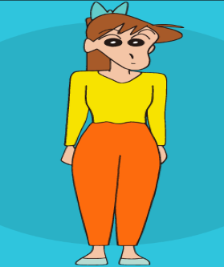

99%自學幼兒園 教學環境
師資陣容
園長
- 學歷
國立臺北護理健康大學嬰幼兒保育系
屏東科技大學幼兒保育系(碩士班)
英國霍爾大學哲學博士
行政組長
- 學歷
國立中央警察大學犯罪防治博士
普渡大學兒童發展與家庭研究所博士
臺北市立大學教育學博士
總務組長
- 學歷
國立臺灣大學 經濟學系博士
國立政治大學 經濟學系博士
國立清華大學經濟學系第1組博士

安置孩童班老師
- 學歷
美國賓州州立大學課程與教學博士
美國北科羅拉多大學 幼兒教育博士
國立政治大學教育學博士
基礎學習班老師
- 學歷
國立中正大學教育學博士
中山醫學大學營養系博士
美國紐約大學戲劇教育碩士

小學先修班老師
- 學歷
國立台灣大學護理所碩士
馬尼拉大學教育系碩士
台灣師範大學 教育學系 博士
廚師
- 資歷
史上最年輕的特級廚師
傳說中的廚具 繼承人
宮廷御膳房「龍廚師」
駕駛員
- 戰績
勝於大宮智史(MX-5 二代)
勝於小柏海(神奈川第二戰)(MR-S)
勝於奧山廣也(S15)